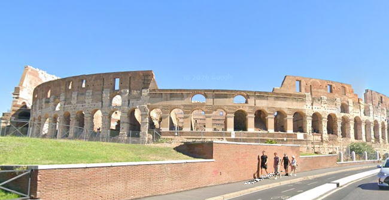

El Coliseo o Anfiteatro Flavio es un anfiteatro de la época del Imperio romano, construido en el siglo I. Está ubicado en el este del Foro Romano y fue el mayor de los que se construyeron en el Imperio romano.
Articulo de wikipedia original.
Volver al menu original